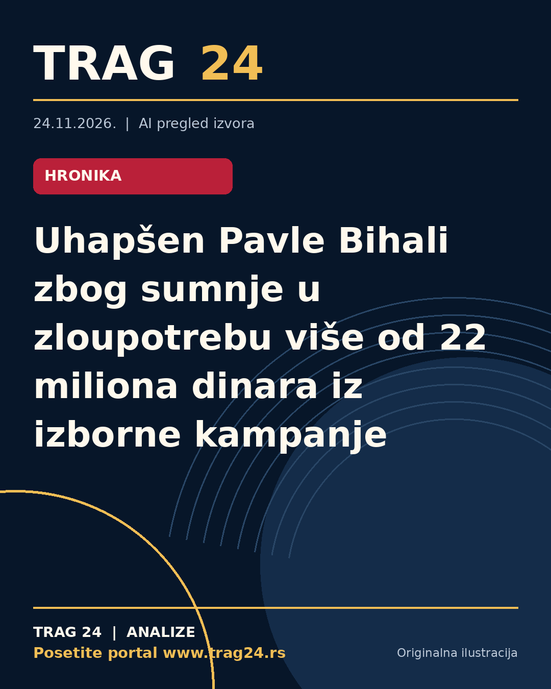

Uhapšen Pavle Bihali zbog sumnje u zloupotrebu više od 22 miliona dinara iz izborne kampanje

ŠTA SE DOGODILO
Pavle Bihali, vođa pokreta za zaštitu životinja 'Levijatan' i politički aktivista, uhapšen je u Beogradu po nalogu Višeg javnog tužilaštva u Beogradu. Sumnja se da je zloupotrebio za lične potrebe iznos veći od 22 miliona dinara koji su namenjeni finansiranju izborne kampanje 2022. godine.
HRONOLOGIJA
U toku 2022. godine, novac iz Republičkog i gradskog budžeta davao se koaliciji Ruski manjinski savez za potrebe parlamentarnih i gradskih izbora u Beogradu. Iako nije potrošio sav novac u kampanji kako je predviđeno, Bihali je, prema sumnjama, podigao preostali iznos i zadržao ga za sebe. Hapšenje je izvršeno danas u Beogradu, po nalogu Višeg javnog tužilaštva, a istraga je u toku.
ŠTA NAVODE IZVORI
Svi izvori, uključujući Kurir, Telegraf i Euronews Srbija, slažu se da je Bihali osumnjičen za zloupotrebu novca namenjenog za izborni proces 2022. godine. Novac je bio dodeljen koaliciji Ruski manjinski savez, a Bihali je, prema navodima, podigao i zadržao novac za lične potrebe na štetu budžeta. Tužilaštvo je postupak pokrenulo na osnovu izveštaja Agencije za sprečavanje korupcije. Detalji o ostalim okolnostima ostaju nepoznati.
ŠTA JE POTVRĐENO
Potvrđeno je da je hapšenje izvršeno po nalogu Višeg javnog tužilaštva u Beogradu i da je osumnjičenje vezano za finansiranje izbornih kampanja 2022. godine. Novac je poticao iz Republičkog i gradskog budžeta i bio je dodeljen koaliciji Ruski manjinski savez. Bihali je zvanično u pritvoru, a istraga je u toku.
ŠTA NIJE POTVRĐENO
Nisu dostupni detalji o tačnim mehanizmima zloupotrebe, kao ni o tome da li su druge osobe uključene u ovaj slučaj. Takođe, nema potvrde o ishodu istrage niti o zvaničnoj optužnici. Informacije o pravnim koracima koji će uslediti još nisu objavljene.
ŠTA OSTАJE OTVORENO: Ostaje nepoznato kako će se slučaj dalje razvijati, da li će biti proširen na druge aktere ili organizacije, kao i da li postoje druge zloupotrebe povezane sa finansiranjem izborne kampanje. Takođe, otvoreno je pitanje pravne situacije pokreta 'Levijatan' i da li će ovaj slučaj uticati na njegov rad.
Izvori
- https://mondo.rs/Info/Crna-hronika/a2316317/uhapsen-pavle-bihali.html
- https://www.telegraf.rs/vesti/hronika/4439120-uhapsen-pavle-bihali
- https://www.euronews.rs/srbija/aktuelno/253540/uhapsen-voda-pokreta-levijatan-pavle-bihali/vest
Ova analiza je pripremljena uz pomoć veštačke inteligencije na osnovu javno dostupnih izvora. Navodi izvora nisu nužno nezavisno potvrđeni.